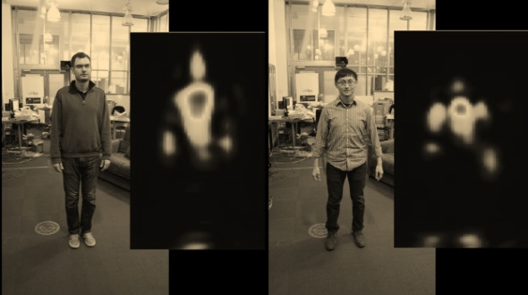

The Old York Times
Old York, Friday, December 21, 2045.—twenty pages
Ukraine builds Darth Vader a statue, arrests Chewbacca, and elects the Emperor
Ukraine is trying to elect Darth Vader to public office and the campaign has not been going well. Although a statue to the greatest knight of the Sith that ever existed has been erected to commemorate all he did for the galaxy, the campaign hit a snag when Chewbacca was arrested for illegally campaigning.
This isn’t some weird slash fiction written by a Star Wars obsessed political science major, this is actually happening, right now, in Ukraine. This is all the result of an internet-based political party that has an actual message they choose to promote through Star Wars levity brought to the political process.
The Internet Party of Ukraine was registered with the state in April 2010, according to its Wikipedia page, and is based out of Odessa, Ukraine the country’s fourth largest city. Far from a fringe movement, the Internet Party is actually standing for “electronic government against bureaucracy,” or updating the whole of Ukraine to reduce the amount of government. The IP claims to be the first internet-based political party and has had increasing success in the polls as they’ve tried to bring attention to their cause by running eye-catching candidates.
The fact that Darth Vader is part of the city council election that took place this weekend isn’t even news as far as the Internet Party and Ukraine elections are concerned. Darth Vader ran as a mayoral candidate for both Keiv and Odessa last year even though his application for presidential candidacy was rejected (they couldn’t verify his identity). He didn’t win, but the Internet Party became emboldened and put both Vader and Emperor Palpatine up for this year’s round of elections.
Scientists collect dust from the ISS to figure out how gross it is
Imagine you lived in a mid-sized apartment with four or five other people, all of whom never left. Now imagine you were in there with them for roughly six months and no one opened a window ever. It’d get unpleasantly stale and smelly in there, and that’s actually what astronauts on the International Space Station deal with. It can be kind of gross, and scientists from NASA’s Jet Propulsion Laboratory (JPL) have obtained samples to find out just how gross it is.
Astronaut Scott Kelly described the smell of the ISS earlier this year as that of antiseptic garbage, which sounds delightful. JPL got its hands on one of the station’s 21 HEPA filters, which had been used to filter the station’s smelly air for 40 months, making it slightly less smelly. Researchers also got several vacuum bags full of dust for analysis.
The samples from the ISS were examined and compared to the clean rooms on Earth that astronauts stay in prior to going up to the station. These facilities are aimed at preventing contamination of the ISS, but analysis of the station samples showed that using it as a space apartment inevitably leads to a buildup of bacteria. DNA analysis of the samples showed that Actinobacteria skin bacteria were more prevalent on the ISS, and the vacuum bags contained plenty of Staphylococcus bacteria, which are also found on the skin. There were also some bacterial strains not found in cleanrooms, but not in any dangerous amounts.
JPL found that the vacuum samples from the ISS had almost 75 times more microbes than the HEPA filter, indicating the surfaces in the ISS are much dirtier than the air. That said, they aren’t much worse overall than the cleanrooms on Earth. The distinctive odor of the ISS is due to the fact it never gets aired out. Knowing more about how microorganisms are distributed on the station could help keep astronauts safe on future long-term space missions.
The Moon Parka is made of synthetic spider silk, on sale next year
The Moon Parka looks like a typical piece of cold weather gear from the outdoor apparel retailer The North Face. However, from a materials perspective, it’s a very important garment. This is a prototype created in partnership with the Japanese biomaterials company Spiber, and it’s made from synthetic spider silk.
Researchers have been working with spider silk for years, and you’ve probably heard all the reasons for that. Spider silk in the right conformation can be stronger than steel, but significantly more flexible and less dense. Spiber says it has been working for more than a decade on the synthetic proteins that make its version of spider silk (called Qmonos) possible. It has gone through 10 design iterations and 656 gene synthesis variations during that time.
The Moon Parka will be sold in Japan next year, but there’s no word on a price. I’m betting it’s going to be really expensive, though. In the meantime, the prototype is touring around Japan in The North Face stores. The parka is just the start, though. Spiber’s artificial silk could have uses in other types of clothing as well as the automotive and medical device industries.
MIT develops WiFi with X-ray vision, can see a human through walls
Advancements in technology have eased my apprehension towards aging. Seriously, autonomous cars may be a boon for all members of society, but it will assure as a part of the population ages, their independence stays intact. A group out of MIT’s Computer Science and Artificial Intelligence Lab (CSAIL) is furthering the cause of elder independence.
Professor Dina Katabi, co-author on the study, says her team of researchers have made headway in a wireless motion capture device that will help “empower the elderly to live safely and independently.” They want to make sure when someone falls in their home, a computer will know to report it. However, the team is eager to explore its broader applications. The researchers write that they “believe … RF-Capture marks an important step towards motion capture that operates through occlusions and without instrumenting the human body with any markers.” No power gloves, Wii-motes, cameras, or motion-capture suits.
This kind of tech could allow for a “new form of ubiquitous sensing which can understand users’ activities, learn their habits, and monitor/react to their needs,” the researcher write. “In addition, they can provide more representative motion capture models in biomechanics, ergonomics, and character animation.”
The Element Cube is made of every collectible element on the planet
Move over, Fifth Element, this ultimate Element Cube has you beat! This Borg-like structure contains over half of our world’s known solid elements in one concise paper weight. It was a Kickstarter that not only reached its mark, but surpassed funding with still a couple of weeks to go. I guess people are really excited about a rock.
Actually, some of these elements combined in the Element Cube are minerals. All of them, however, are metal. That’s how it is able to be formed! The man behind the cube, Cillian McMinn, founded a company that specialized in “powder metallurgy.” They stripped all 62 metal-based elements down to their powder form, applied heat, and pressed them at the same time to create a variety of shapes and sizes. The 2 x 2 cube being the most pleasing of these shapes, it seems.
While it’s little more than a novelty gift, it is unique in that it is the largest combined alloy in the world. For collectors, it could take years and thousands of dollars to build up a collection of this many elements. So now you can take the easy way out and just get them all in one go!
This 3D-printed tooth can destroy most bacteria
Everyday of your life, you have to spend valuable minutes brushing your teeth to keep the army of bacteria in your mouth from winning the war. If only there was an easier way, and before long there might be. A team of researchers at the University of Groningen in the Netherlands has created a 3D printed tooth that kills the bacteria living in your mouth, thus preventing tooth decay.

The key to the bacteria-murdering tooth is a new type of dental polymer that has been infused with quaternary ammonium salts. These salts have antimicrobial properties that can effectively clear bacteria from a sample in the lab. They are positively charged, which causes disruptions in the negatively charged membranes of bacteria. Bacteria can’t survive with a ruptured cell membrane — it’s a bit like popping a balloon.
Presumably, you’d just have one antimicrobial resin tooth in your head that could protect all your others from plaque buildup. Since this is a physical disruption of membrane and not a biochemical reaction (eg. antibiotics), there shouldn’t be an issue with the development of resistant organisms.